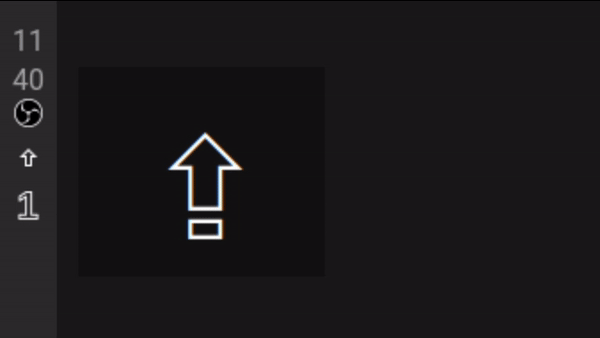

Issue
Star
Download
GXCapIndicator
Show image from clipboard to Drop into a webpage

GXCapIndicator on Waybar
Try without installing!
want to use in a browser panel or something? see
Standalone page
Installation and usage: